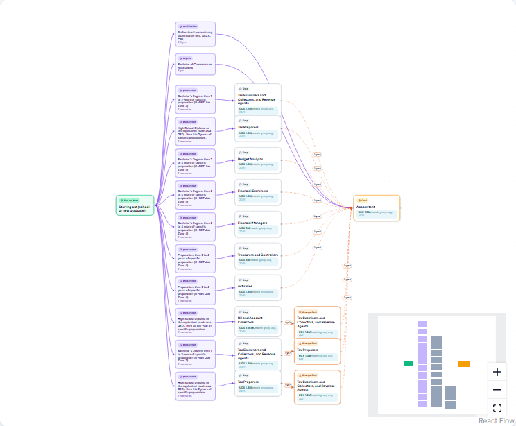
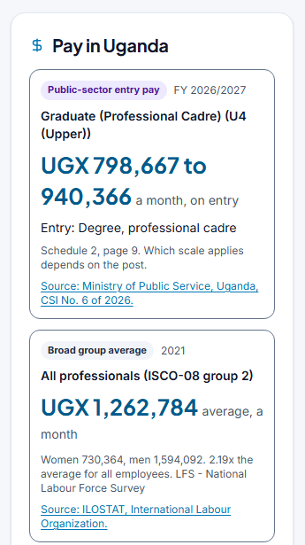
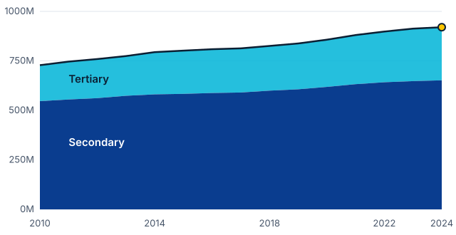

Official pay and admission rules for every student, on any device.
Careers are invisible. Students know a handful of jobs. Thousands of real careers, and the routes into them, are never explained.
Subject choices close doors silently. The wrong combination at 16 can rule out medicine or engineering, and students find out when they apply.
The rules are scattered. Entry requirements and past cut-offs sit in PDFs, portals and social-media posts.
Pay is guesswork. Salary sites show user-reported estimates, often from another country.
Start from school or at any point in your career.

Forwards or backwards
from where you are, or from the goal
Every step shown
qualifications, time and pay in between
Honest
less-certain moves are marked as such
Path planner
Every route between two points, ranked by time
Subject selector
Which subjects keep which careers open
Admission calculators
Official weighting rules and past cut-offs
CV builder
Skills suggested for the target career
Salary check
A job offer compared with official pay
Finding work safely
Recruitment-fee rules and scam warnings

Pay by country, from the publisher. National pay statistics, public-service salary scales, legal minimum wages and ILO data for 170 countries, in the publisher's currency with source and year.
Admission rules from official sources. Weighting systems, UCAS Tariff points and three years of past cut-offs. We show the rules; we never predict a "chance".
72 sources, each with its licence. ILO, UNESCO, EU ESCO, O*NET, national statistics offices, ministries and exam boards.
| Step | Rate | Students | At US$1, once |
|---|---|---|---|
| TAM: students in secondary and tertiary education worldwide | 920.3M | US$920M | |
| who use the Internet (ages 15 to 24) | 82% | 754.6M | |
| SAM: online and able to pay US$1 digitally (adults with an account) | 79% | 596.1M | US$596M |
| SOM: our five-year target share of SAM | 1% | 6.0M | US$6.0M |
Pricing: a one-time US$1 fee for lifetime access. Rates are applied in sequence and assumed independent; youth Internet use and adult account ownership are proxies for students' access and ability to pay. The 1% share is our assumption (scenarios on slide 10).
Students in secondary and tertiary education, world, 2010 to 2024

About 1 billion students by 2030 if the 2014 to 2024 trend continues. This is an extrapolation, not a forecast.
Priced so almost any student who is online can pay.
Students: a one-time US$1 fee for lifetime access, from school through every career move.
Schools and counsellors: class dashboards and reports, priced per student.
Universities, employers, governments: verified listings, reaching eligible students, anonymised aggregate insight.
Low cost to serve. Core data comes from official open sources we cite, not buy. A lightweight web app that runs on basic smartphones.
Search
Thousands of career, pay and admission pages on official data, found when students search.
Sharing
Route maps students send to friends and parents on WhatsApp and social media.
Schools and counsellors
Whole classes at once, timed to subject choice and admission seasons.
Partners
Universities, exam boards, NGOs and ministries that need students to choose well.
Every country is covered from day one on ILO and UNESCO standards. Going deeper means adding a country's exams, admission rules and pay scales as data, not new software.
Share of the serviceable market (596.1M students) paying US$1 within five years.
1.5M students
US$1.5M in student fees
6.0M students
US$6.0M in student fees
17.9M students
US$17.9M in student fees
Cumulative over five years, from student fees only: before school, university, employer and data revenue. Shares are our assumptions.
| Routes from school or any job | Where pay data comes from | Subjects and admission rules | Built for | |
|---|---|---|---|---|
| CareerProof Global | Yes: 938 careers, 6,682 links | Official publishers, 170 countries | Yes, cited by country | Students and career changers, any country |
| Glassdoor | No | Employee-submitted reports | No | Job seekers; company reviews |
| Indeed | No | Job adverts and user reports | No | Job seekers |
| PayScale | No | Salary surveys | No | Salary benchmarking |
| No | Member-submitted | No | Professional networking and hiring | |
| O*NET / CareerOneStop | Related careers, US only | US official statistics | No | US job seekers and students |
Others answer "what does this job pay?" for people already in the job market. We answer "how do I get there from here?", starting at school.
Cited official data
72 licence-checked sources, assembled and cross-coded
Route network
938 careers and 6,682 links from guides, O*NET and EU ESCO
Rules as tested data
Admission rules stored as versioned, tested data, not text
Built to scale
International standards; a new country is data, not code
The lead grows with every country we add.
[Contributions: what they built or lead, and relevant experience]
[Contributions: what they built or lead, and relevant experience]
[Contributions: what they built or lead, and relevant experience]
careerproofglobal.com · careerproofglobal@gmail.com